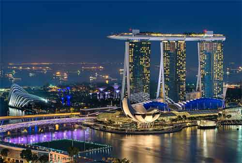

Nama : King Leonardo Bob Sumbul
Pekerjaan : Owner, PT Emas Internasional Murn
PT :Emas Internasional Murni
HOBI : Berpengalaman dalam menginisiasi dan mengelola turnamen berskala internasional yang mempertemukan talenta global.
Cita Cita : • Menjadi pionir dan Top 1 di dunia dalam integrasi bisnis modal, investasi, dan ekosistem kompetisi internasional.
Saya adalah seorang pegiat investasi dan pasar saham yang memiliki ketertarikan mendalam terhadap dunia keuangan, investasi, pengelolaan modal, serta strategi dalam menciptakan pertumbuhan aset secara berkelanjutan. Bagi saya, investasi bukan hanya mengenai angka, keuntungan, atau pergerakan harga di pasar, tetapi juga merupakan sebuah proses pembelajaran yang membutuhkan ketelitian, kesabaran, disiplin, keberanian, serta kemampuan dalam melihat peluang di tengah berbagai kondisi pasar. Saya memiliki ketertarikan besar terhadap bagaimana sebuah modal dapat dikelola, dikembangkan, dan diputar secara strategis untuk menghasilkan peluang yang lebih baik. Setiap keputusan investasi menurut saya perlu didasari oleh perencanaan yang matang, pemahaman terhadap kondisi pasar, analisis yang objektif, serta pertimbangan terhadap risiko dan potensi yang ada. Saya percaya bahwa pengelolaan modal yang baik bukan hanya berorientasi pada hasil saat ini, tetapi juga bagaimana menjaga keberlangsungan dan menciptakan pertumbuhan dalam jangka panjang. Dalam menjalankan aktivitas investasi, saya selalu berusaha untuk terus belajar dan mengikuti perkembangan dunia ekonomi, pasar saham, bisnis, serta berbagai peluang yang dapat memberikan nilai tambah. Saya menyadari bahwa dunia investasi terus berubah dan berkembang, sehingga kemampuan untuk beradaptasi, memperluas wawasan, serta mengambil keputusan secara bijaksana menjadi hal yang sangat penting. Saya juga percaya bahwa peluang besar sering kali lahir dari hubungan dan kolaborasi yang tepat. Karena itu, saya selalu terbuka untuk membangun jaringan dengan investor, pengusaha, profesional, maupun individu yang memiliki visi dan pola pikir yang sejalan. Bertukar pengalaman, berbagi wawasan, mendiskusikan strategi, dan membuka peluang kerja sama merupakan bagian penting dalam perjalanan untuk menciptakan pertumbuhan yang lebih besar. Bagi saya, kerja sama bisnis bukan semata-mata mengenai bagaimana memperoleh keuntungan dalam waktu singkat. Lebih dari itu, kerja sama merupakan proses membangun kepercayaan, memahami karakter dan tujuan masing-masing pihak, menyusun strategi yang saling menguntungkan, serta menciptakan hubungan profesional yang dapat bertahan dalam jangka panjang. Saya menghargai setiap bentuk kerja sama yang dibangun berdasarkan transparansi, komunikasi yang baik, tanggung jawab, dan komitmen. Menurut saya, sebuah hubungan bisnis yang kuat tidak hanya dibentuk ketika keadaan berjalan sesuai harapan, tetapi juga ketika setiap pihak mampu menjaga komunikasi dan mencari solusi ketika menghadapi tantangan. Saya selalu terbuka untuk berdiskusi mengenai berbagai peluang bisnis dan investasi yang memiliki prospek untuk dikembangkan. Saya percaya bahwa setiap orang memiliki pengalaman, perspektif, dan keahlian yang berbeda. Ketika perbedaan tersebut dapat dipadukan dengan tujuan yang sama, maka dapat tercipta sebuah strategi yang jauh lebih kuat dibandingkan jika berjalan sendiri-sendiri. Dalam melihat sebuah peluang, saya tidak hanya mempertimbangkan potensi keuntungan, tetapi juga mempertimbangkan bagaimana peluang tersebut dapat dikembangkan secara realistis dan berkelanjutan. Saya percaya bahwa keuntungan yang sehat seharusnya lahir dari strategi yang jelas, perencanaan yang baik, pengelolaan risiko yang tepat, serta kemampuan untuk mengambil keputusan berdasarkan pertimbangan yang rasional. Saya juga memiliki pandangan bahwa modal bukan hanya berbentuk uang. Modal dapat berupa pengetahuan, pengalaman, jaringan, reputasi, kemampuan, waktu, maupun kepercayaan. Ketika berbagai bentuk modal tersebut dapat dikombinasikan dengan tepat, sebuah peluang kecil sekalipun dapat berkembang menjadi sesuatu yang memiliki nilai lebih besar. Oleh karena itu, saya selalu berusaha membangun hubungan dengan orang-orang yang memiliki semangat untuk berkembang, memiliki pola pikir terbuka, dan bersedia menciptakan sesuatu yang bernilai. Saya percaya bahwa lingkungan yang positif dan jaringan yang berkualitas dapat membuka berbagai kesempatan yang sebelumnya mungkin tidak terlihat. Saya tidak melihat perjalanan investasi sebagai sebuah perlombaan untuk mendapatkan hasil paling cepat. Saya lebih melihatnya sebagai perjalanan jangka panjang yang membutuhkan konsistensi, pembelajaran, evaluasi, dan kemampuan untuk terus berkembang. Ada saat ketika pasar memberikan peluang besar, tetapi ada pula saat ketika kehati-hatian menjadi pilihan yang lebih bijaksana. Bagi saya, kemampuan untuk mengetahui kapan harus mengambil peluang dan kapan harus menunggu merupakan bagian penting dari pengelolaan modal. Saya percaya bahwa keberanian dalam mengambil peluang harus selalu disertai dengan perhitungan yang matang. Risiko tidak selalu dapat dihindari, tetapi risiko dapat dipahami, diperhitungkan, dan dikelola dengan strategi yang tepat. Karena itu, saya selalu berusaha mengedepankan pendekatan yang rasional dan tidak hanya mengandalkan emosi dalam mengambil keputusan. Selain berfokus pada investasi dan pengembangan modal, saya juga tertarik untuk memperluas wawasan melalui diskusi dan pertukaran pengalaman dengan berbagai pihak. Saya percaya bahwa tidak ada seseorang yang dapat mengetahui semuanya. Selalu ada hal baru yang dapat dipelajari dari pengalaman orang lain, baik dari keberhasilan maupun dari kegagalan yang pernah mereka alami. Saya menghargai orang-orang yang memiliki visi jangka panjang, integritas, komitmen, dan kemauan untuk terus belajar. Bagi saya, kualitas seorang partner tidak hanya dilihat dari seberapa besar modal yang dimiliki, tetapi juga dari cara berpikir, sikap profesional, kemampuan berkomunikasi, serta keseriusan dalam membangun sesuatu bersama. Ke depan, saya ingin terus mengembangkan jaringan, memperluas wawasan, menemukan peluang-peluang baru, dan membangun kerja sama yang dapat memberikan manfaat bagi semua pihak. Saya terbuka terhadap berbagai ide, konsep, maupun peluang kolaborasi selama memiliki dasar yang jelas, tujuan yang realistis, serta potensi untuk dikembangkan secara berkelanjutan. Saya percaya bahwa pertumbuhan yang besar jarang terjadi hanya karena satu keputusan. Pertumbuhan biasanya merupakan hasil dari banyak keputusan kecil yang dilakukan secara konsisten, strategi yang terus diperbaiki, serta hubungan yang dibangun dengan orang-orang yang tepat. Bagi saya, membangun modal berarti membangun masa depan. Mengelola modal berarti memahami bagaimana menjaga apa yang sudah dimiliki sekaligus mencari cara untuk mengembangkannya. Sementara membangun kerja sama berarti menciptakan sebuah hubungan yang memungkinkan setiap pihak memiliki kesempatan untuk tumbuh dan berkembang bersama. Saya meyakini bahwa dengan visi yang jelas, perencanaan yang matang, disiplin dalam mengelola modal, keberanian mengambil peluang yang terukur, serta dukungan dari partner yang tepat, sebuah modal dapat berkembang menjadi sesuatu yang jauh lebih besar. Bukan hanya dalam bentuk keuntungan finansial, tetapi juga dalam bentuk pengalaman, jaringan, reputasi, dan nilai jangka panjang. Saya selalu terbuka untuk mengenal orang-orang baru, berdiskusi mengenai investasi dan bisnis, bertukar ide, maupun mengeksplorasi peluang kerja sama yang memiliki potensi. Saya percaya bahwa setiap pertemuan dapat membuka wawasan baru dan setiap hubungan yang dibangun dengan baik dapat menjadi awal dari sebuah perjalanan yang lebih besar. Pada akhirnya, saya ingin membangun sesuatu yang bukan hanya memberikan hasil, tetapi juga memiliki fondasi yang kuat untuk terus berkembang. Saya percaya bahwa kesuksesan jangka panjang bukan hanya tentang seberapa besar seseorang mampu mendapatkan keuntungan, tetapi juga tentang seberapa baik seseorang mampu mempertahankan kepercayaan, menciptakan nilai, mengelola peluang, dan tumbuh bersama orang-orang yang tepat. Dengan semangat untuk terus belajar, berkembang, dan membuka peluang baru, saya siap membangun koneksi serta menjalin kerja sama dengan individu maupun pihak yang memiliki visi, nilai, dan tujuan yang sejalan. Bagi saya, setiap peluang adalah awal dari kemungkinan baru, dan setiap kerja sama yang dibangun dengan kepercayaan serta strategi yang tepat dapat menjadi langkah menuju pertumbuhan yang lebih besar..